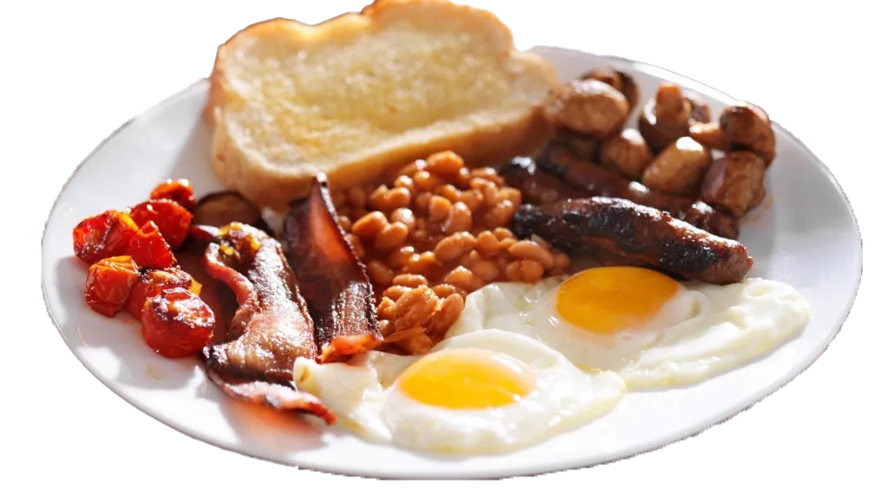
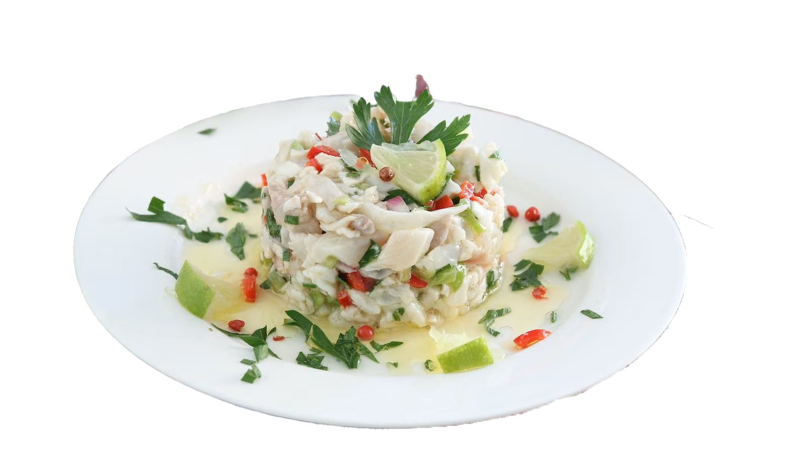

Colazioni nel mondo
Dolce o salata? Non importa. La colazione è il vero biglietto da visita di una nazione.
Oggi ne andremo a conoscere 3: Polonia, Galles, Perù
Polonia

Uova strapazzate coperte con fette di salsiccia fatte in casa (kielbasa). Cui, solitamente, si aggiungono un paio di frittelle di patate. Ed ecco la colazione tradizionale polacca.
Galles

Rarebit, il celebre crostone di Cheddar fuso e spalmato, un formaggio a pasta dura che prende il nome dal villaggio inglese dove si produce, è l’elemento immancabile in ogni colazione gallese.
Perù

Ceviche piatto con frutti di mare crudi e marinati nel limone, uniti a spezie piccanti tipo peperoncino e coriandolo, è una buona abitudine della colazione peruviana.
